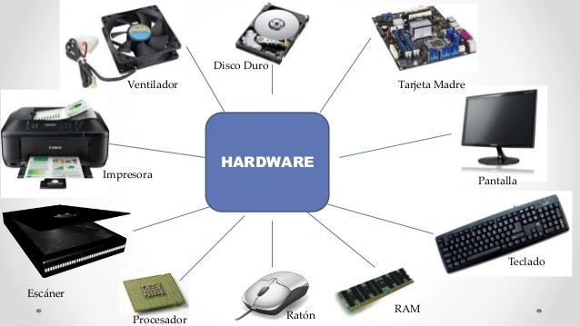

Vai all'indice
Vai al capitolo 1
Naviga all'interno del CAPITOLO 2...
Hardware
Software
Hardware
Tutto ciò che si tocca in un computer è hardware, che in inglese significa letteralmente "ferramenta" e che si contrappone al software, ossia ai programmi. Dell'hardware fanno parte anche le periferiche e tutto ciò che permette al computer di dialogare con l'utente: schermo, tastiera, stampante e così via.
La scheda madre è sicuramente la parte più importante del computer. Sebbene esistano diversi componenti indispensabili per il suo funzionamento, la scheda madre è l'elemento d'integrazione che li trasforma in personal computer.
La scheda madre di un PC, detta anche scheda principale, è un circuito stampato di grandi dimensioni che contiene molte parti essenziali del computer, tra cui il microprocessore, la memoria cache, RAM, i bus di espansione, connettori per le porte parallele e seriali, mouse e tastiera.
Le apparecchiature come la tastiera, il monitor e la stampante permettono al computer di scambiare informazioni con l'ambiente esterno. Esse sono chiamate periferiche di input e output e fanno parte dell'hardware.
Input: nel linguaggio scientifico e tecnico (contrapposto a output) è l'insieme dei dati, informazioni, istruzioni, quantità di risorse o materie prime, immessi nella fase iniziale in un processo.
Output: nel linguaggio scientifico e tecnico (contrapposto a input) è il momento operativo o il risultato finale o l'elemento terminale di un procedimento.
Anche i cosiddetti bus fanno parte delle componenti hardware di un computer. Il bus è un canale di comunicazione che permette a periferiche e componenti di un sistema elettronico - come ad esempio un computer - di interfacciarsi tra loro scambiandosi informazioni o dati di vario tipo attraverso la trasmissione e la ricezione di segnali.

Software
La parola software deriva dall’inglese (“soft” che significa leggero e “ware” che significa oggetto) e significa letteralmente “materiale leggero”.
Il software, infatti, è l’insieme di informazioni memorizzate su un dispositivo ed utilizzate da quest’ultimo – insieme all’hardware, ai comandi che noi diamo al dispositivo stesso (ad esempio quando schiacciamo un bottone) e all’energia elettrica – per svolgere operazioni più o meno complesse. Il software è comunemente riconosciuto come la controparte dell’hardware, perché “dà le istruzioni” a quest’ultimo. Se l’hardware è il corpo di un dispositivo, il software ne rappresenta la mente.
In un PC faranno parte del software, ad esempio, il sistema operativo, il programma che usiamo per scrivere, il programma che usiamo per sentire la musica etc. cioè tutte quelle componenti (copiate in una qualche memoria) che danno informazioni alla macchina allo scopo di svolgere precise istruzioni.
Il software, perciò, è la parte fondamentale grazie alla quale possiamo utilizzare a pieno il nostro hardware. A seconda delle possibilità più o meno concrete di un hardware si possono creare dei software per impartire comandi ad una macchina.

Vai al capitolo 3